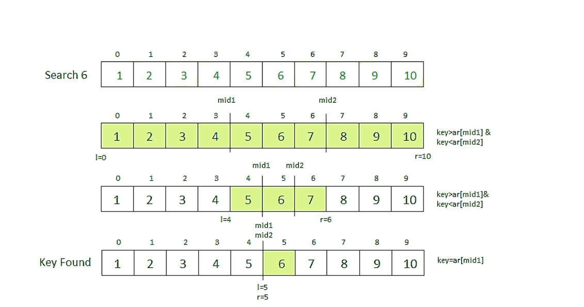

Ternary Search
Ternary search is a divide and conquer algorithm that can be used to find an element in an array. It is similar to binary search where we divide the array into two parts but in this algorithm, we divide the given array into three parts and determine which has the key (searched element). We can divide the array into three parts by taking mid1 and mid2 which can be calculated as shown below. Initially, l and r will be equal to 0 and n-1 respectively, where n is the length of the array.
mid1 = l + (r-l)/3
mid2 = r – (r-l)/3
Note: Array needs to be sorted to perform ternary search on it. mid2 = r – (r-l)/3
Steps to perform Ternary Search:
- First, we compare the key with the element at mid1. If found equal, we return mid1.
- If not, then we compare the key with the element at mid2. If found equal, we return mid2.
- If not, then we check whether the key is less than the element at mid1. If yes, then recur to the first part.
- If not, then we check whether the key is greater than the element at mid2. If yes, then recur to the third part.
- If not, then we recur to the second (middle) part.
Example :

/* C++ program to illustrate
ternary search*/
#include <bits/stdc++.h>
using namespace std;
/* Function to perform Ternary Search */
int ternarySearch(int ar[], int l, int r, int key)
{
while (r >= l) {
/* Find the mid1 and mid2 */
int mid1 = l + (r - l) / 3;
int mid2 = r - (r - l) / 3;
/* Check if key is present at any mid */
if(ar[mid1] == key)
return mid1;
if(ar[mid2] == key)
return mid2;
/* Since key is not present at mid, check in which region it is present then repeat the Search operation in that region */
if(arr[m] < x)
l = m + 1;
/* If x is smaller, ignore right half */
else
r = m - 1;
}
/* if we reach here, then element was not present */
return -1;
}
int main(void)
{
int arr[] = { 2, 3, 4, 10, 40 };
int x = 10;
int n = sizeof(arr) / sizeof(arr[0]);
int result = binarySearch(arr, 0, n - 1, x);
(result == -1)
? cout << "Element is not present in array"
: cout << "Element is present at index " << result;
return 0;
}
#include <bits/stdc++.h>
using namespace std;
/* Function to perform Ternary Search */
int ternarySearch(int ar[], int l, int r, int key)
{
while (r >= l) {
/* Find the mid1 and mid2 */
int mid1 = l + (r - l) / 3;
int mid2 = r - (r - l) / 3;
/* Check if key is present at any mid */
if(ar[mid1] == key)
return mid1;
if(ar[mid2] == key)
return mid2;
/* Since key is not present at mid, check in which region it is present then repeat the Search operation in that region */
if(arr[m] < x)
l = m + 1;
/* If x is smaller, ignore right half */
else
r = m - 1;
}
/* if we reach here, then element was not present */
return -1;
}
int main(void)
{
int arr[] = { 2, 3, 4, 10, 40 };
int x = 10;
int n = sizeof(arr) / sizeof(arr[0]);
int result = binarySearch(arr, 0, n - 1, x);
(result == -1)
? cout << "Element is not present in array"
: cout << "Element is present at index " << result;
return 0;
}
Output :
Index of 5 is 4
Index of 50 is -1
Time Complexity : O(log3n) , where n is the size of the array.Index of 50 is -1
Auxiliary Space: O(1)